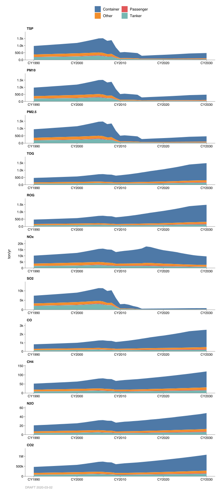
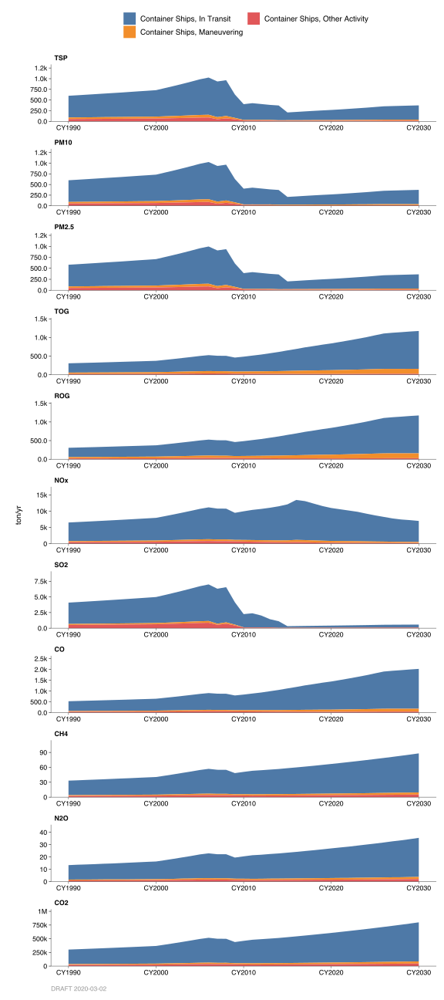
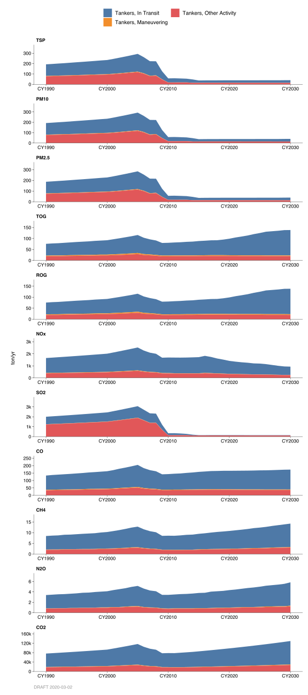
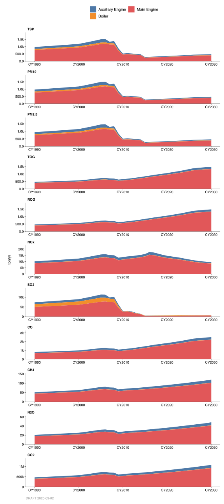

2.7 Ships
2.7.1 Emissions
Introduction
Emissions reported in these categories are from combustion of fuel from engines of commercial ocean-going vessels (OGVs). The emission estimates for OGVs are developed by the California Air Resources Board (CARB) and are based on numerous sources that include data from CARB OGV surveys, vessel population data from governmental agencies such as State Land Commissions, and engine characteristic data from various OGV studies and manufacturer reports. The inventory accounts for commercial OGVs greater than or equal to 400 feet in length or 10,000 gross tons or propelled by a marine compression ignition engine with a displacement equal to or greater than 30 liters per cylinder. The emission inventory includes all ocean-going vessel emissions occurring within 3, 24, and 100 nautical miles from the coastline of the San Francisco Bay Area region.
Methodology
The methodology used to estimate OGV emissions is based on CARB’s 2005 draft report titled, “Emissions Estimation Methodology for Ocean-Going Vessels”. Although the report is in draft form, the emission data is derived based on methodology and findings given in this report.
Emissions from OGVs vary based on ship type and operating mode. There are eight ship types and three operating modes accounted for in the inventory. The ship types include auto vessels, bulk carriers, container ships, passenger ships, reefers, RORO ships, tankers, and general vessels (others). The operating modes include the hotelling/berthing mode (including anchorage), maneuvering mode, and in-transit mode.
Under each operating mode, the emissions are broken down by fuel. OGVs emissions vary depending on the type of fuel used to power the engines. Two fuel types, residual fuel and distillate fuel, are generally used in the operation of OGVs. These fuels are combusted in three areas: the ship’s main engine(s), the auxiliary engine(s), and the ship’s boiler(s). The emissions associated with the combustion of fuels from these OGV engines in relation to a particular ship type and operating mode are given by categories and accounted for in the inventory.
In addition to criteria pollutants, greenhouse gas emissions are included in the emission inventory. Greenhouse gas emissions, including CO2, CH4, and N2O, are taken from CARB data base. Greenhouse gas emission factors take into account fuel-specific carbon content and the percent of carbon that oxidizes to convert to greenhouse gas emissions.
Monthly Variation
Monthly distribution was estimated based on the ships traffic for each month as reported by the San Francisco Marine Exchange.
County Distribution
For maneuvering and in-transit categories, county fractions are not based on actual port location, but rather where the emissions activity occurred during the particular mode of operation of the vessel. For example, during the maneuvering or in-transit mode, vessels may pass through several counties on their way to and from port. Berthing operations occur at port, and therefore, county fractions here are based on the port’s relevant activity.
2.7.2 Trends
For detailed breakdowns of the Container and Tanker sub-categories, see charts further below.

Ship emission projections were developed by ARB based on expected growth rates in the ocean-going vessels populations and activity. They also include changes in emission factors over time as the new engine standards are implemented and the fleet is turn over.
Control
EPA currently regulates U.S. flag ocean-going ships engine types. The rule is designed to decrease air pollutants via requirements of new ships to have more efficient fuel burning engines (category 3 engines) installed and old ships retrofitted with new engines. The rule applies only to U.S. ships. In mid-2009 via rule enactment, ARB has begun to regulate the types of fuel use for all ocean going vessels traveling within 24 nautical miles from the California coast line. All ocean going vessels are required to use low sulfur fuel within this 24 nautical mile zone. Since the enactment of this rule, there has been a significant decrease in SOx and PM emissions from ocean going vessels. Additionally, to comply with CARB Ships At-Berth Regulation, shore power installation is currently being installed by various Bay Area Ports as a mean to further reduce ship emissions. Shore power regulation mainly affects container, passenger, and refrigerated cargo vessels. It is anticipated that the usage of this power will significantly reduce hotelling emissions from ocean going vessels.
By: Tan Dinh Date: January 2014 Base Year: 2011
History: Detailed Breakdowns
By Type of Ship and Activity
Container Ships

Tankers

By Type of Engine
